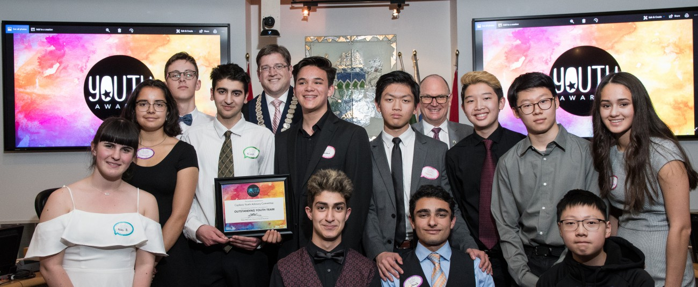
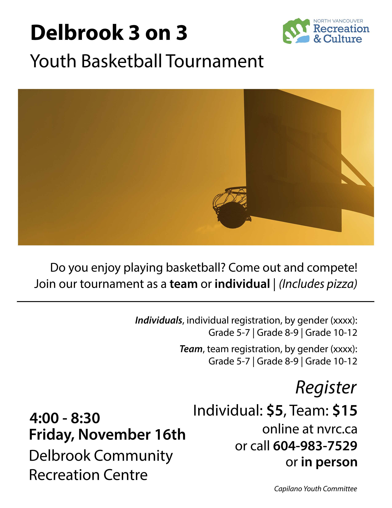

Hi, I'm
Eamon Ma
and this is my story.
Rather than submiting
a conventional PowerPoint and a script,
I thought I could take advantage of this format.
My experiences up to now
have defined who I am,
and what my values are—arguably the most important part of growing up.
You've probably seen this many times.
That was the Capilano Youth Advisory Committee,
where the bunch of us plan and organize events
for young community members.
That photo was us receiving an award from the Mayor of the DNV, Mike Little.
Being in CYAC
made me realize how much I value
doing good things for my community,
in addition to being in group with people that care.
In the group, effective communication was vital
for any meaning progress to be made.
With a group this big, members could have much varying opinons.
Wtih regards to an issue, often members would present their case in great detail
in order to convince the others to take their side.
Needless to say, peacefully resolving conflict is an invaluable skill in any career.

Effective collaboration in the group
was another big part.
Often, we would work amongst ourselves
to come up with different ideas
about how to run an event.
What did I do?
Primarily, my role was to promote the events
Of course, we were all involved in this role.
During my career in the committee, I essentially made all the marketing posters that were at least worth the paper it was printed on.
Here's one from 2018.
Side note:
I've also worked at Loblaws at Park Royal for a few years, with minimal impact on my learning, positive or negative. Thus, I felt it was unnecessary to elaborate.
Activites in school
intensified one of my passions: web development.
Along with a couple friends, I made a website for the Learning Commons:
The full website is at https://commons.handsworth.ca
My friends started out with the website
But I was more experienced with web technologies
So I offered to take the lead on the project
Through the process, I taught my friends about web development
and I learned about collaboration in programming.
Programming is where miscommunication can be catastrophic
So I had to learn the tools and protocols for collaboration in coding.
Things like Git  and Github
allow programmers to effectively write to the same codebase.
and Github
allow programmers to effectively write to the same codebase.
This experience, along with many others
cemented my interest in programming, for instance
during self-isolation, I've started to learn iOS development —something I could never have done just a couple years ago.
Filmmaking has been a passion of mine for a while.
I was honoured to be involved in the production of
the Intro to Handsup video in November, where we made
an interpretation of the opening of La La Land.
This project gave me insights
into the creative process of filmmaking,
as one of my first real project that would be shown to a sizeable audience.
It also allowed me to further explore my creativity.
Simply the fact that I've created something that brought joy
to a large group of people, that I made some kind of difference
overwhelms me with joy. It is film that allows a whole new world to be made.
During each of these processes,
I've learned the importance of setting goals.
With all my interests, without goals, nothing can be done.
What I've learned about myself
is that I value trying new things.
I value being interdisciplinary:
I'm a STEM guy, but I'm just as interested in the arts
I value having range.
I value having a team that knows what it's doing...
...just as I value having fun with that same team.
What now?
I don't know. University, yes, then what?
I don't know what career I'll have. STEM, yes, but what exactly?
I don't know what I'll experience, and what kind of person I'll be.
What I do know, is that I'll have my values.
I'll keep learning
My experiences have made me one that loves learning
I'm proud to have made the lives of some people better,
and entertained many others. I plan on keep doing that.
I'll be in Toronto next year,
studying computer science—one of the most demanded jobs.
Fortunately, demand in the labour market has little to do with my interest.
In academia, I am also interested in economic and statistics,
so I'll be taking courses about them as well.
I do know that with my commitment to range,
I can fulfill a role in society that not many others can.
With range, I'll have options, and I'll never be bored.